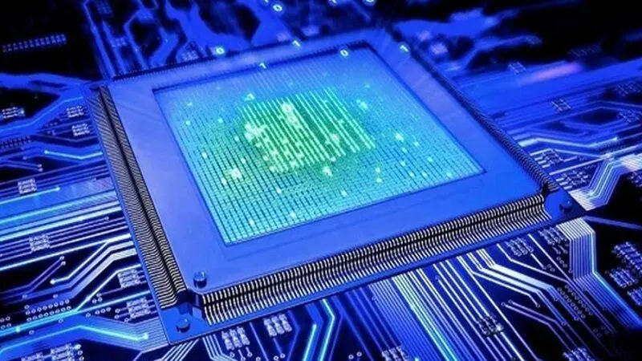

Se trata de un conjunto de reglas, principios y estándares que definen la estructura y el diseño de los componentes de hardware y software que conforman un sistema informático. Esta disciplina abarca desde el nivel más bajo, como los circuitos electrónicos y la lógica digital, hasta el nivel más alto, como lo son los sistemas operativos y las aplicaciones.
En tal sentido, la arquitectura de computadoras constituye la base conceptual y técnica que admite la creación de ordenadores y sistemas informáticos funcionales.
Clasicas
Modelos de arquitectura Clasicas
Estas arquitecturas se desarrollaron en las primeras computadoras electromecánicas y de tubos de vacío. Hay dos arquitecturas distintas relacionadas con el uso y distribución de la memoria: Arquitectura de Jonh Von Neumman y Arquitectura Harvard.
ARQUITECTURA VON NEUMAN.
los sistemas con microprocesadores se basan en esta arquitectura, en la cual la unidad central de proceso (CPU), está conectada a una memoria principal única (casi siempre sólo RAM) donde se guardan las instrucciones del programa y los datos. A dicha memoria se accede a través de un sistema interconexión de buses único (control, direcciones y datos). En un sistema con arquitectura Von Neumann el tamaño de la unidad de datos o instrucciones está fijado por el ancho del bus que comunica la memoria con la CPU. Así un microprocesador de 8 bits con un bus de 8 bits, tendrá que manejar datos e instrucciones de una o más unidades de 8 bits (bytes) de longitud. Si tiene que acceder a una instrucción o dato de más de un byte de longitud, tendrá que realizar más de un acceso a la memoria. El tener un único bus hace que el microprocesador sea más lento en su respuesta, ya que no puede buscar en memoria una nueva instrucción mientras no finalicen las transferencias de datos de la instrucción anterior. Las computadoras digitales convencionales presentan un aspecto Von Neumann. Este modelo consta de cinco componentes principales.
- Unidad de Memoria.
- Unidad de Entrada/Salida.
- Unidad de Control. Incluidos CPU.
- Unidad Aritmética Lógica. Incluida en CPU.
- Registros de Programas. Incluidos en CPU.
Las instrucciones provenientes del sistema de entrada, son almacenados por la memoria, procesados por la ALU bajo la dirección de la unidad de control. Los resultados obtenidos son enviados a la unidad de salida.
El programa almacenado es lo más importante en el modelo. Los programas se almacenan en la memoria del equipo junto con los datos a procesar.
En las computadoras de programa almacenado, el programa puede manipularse como si se tratara de datos. Este concepto da origen a los compiladores, sistemas operativos y es la base de la gran versatilidad de las computadoras modernas.
LIMITACIONES VON NEUMANN
La longitud de las instrucciones por el bus de datos, que hace que el microprocesador tenga que realizar varios accesos a memoria para buscar instrucciones complejas.La velocidad de operación a causa del bus único para datos e instrucciones que no deja acceder simultáneamente a unos y otras, lo cual impide superponer ambos tiempos de acceso.
MODELO HARVARD
Esta arquitectura utiliza los Micro controladores, tiene la unidad central de proceso (CPU) conectada a dos memorias (una con las instrucciones y otra con los datos) por medio de dos buses diferentes.
Una de las memorias contiene solamente las instrucciones del programa (Memoria de Programa), y la otra sólo almacena datos (Memoria de Datos).
Ambos buses son totalmente independientes lo que permite que la CPU pueda acceder de forma independiente y simultánea a la memoria de datos y a la de instrucciones. Como los buses son independientes estos pueden tener distintos contenidos en la misma dirección y también distinta longitud.
También la longitud de los datos y las instrucciones puede ser distinta, lo que optimiza el uso de la memoria en general. Para un procesador de Set de Instrucciones Reducido, o RISC (Reduced Instrucción Set Computer), el set de instrucciones y el bus de memoria de programa pueden diseñarse de tal manera que todas las instrucciones tengan una sola posición de memoria de programa de longitud.
Además, al ser los buses independientes, el CPU puede acceder a los datos para completar la ejecución de una instrucción, y al mismo tiempo leer la siguiente instrucción a ejecutar.
El tamaño de las instrucciones no está relacionado con el de los datos, y por lo tanto puede ser optimizado para que cualquier instrucción ocupe una sola posición de memoria de programa, logrando así mayor velocidad y menor longitud de programa. El tiempo de acceso a las instrucciones puede superponerse con el de los datos, logrando una mayor velocidad en cada operación.
La principal desventaja de esta arquitectura; el bus de datos y direcciones único se convierte en un cuello de botella por el cual debe pasar toda la información que se lee de o se escribe a la memoria, obligando a que todos los accesos a esta sean secuenciales.
Limita el grado de paralelismo (acciones que se pueden realizar al mismo tiempo) y por lo tanto, el desempeño de la computadora
Segmentadas
Las arquitecturas segmentadas o con segmentación del cauce, buscan mejorar e
desempeño realizando paralelamente varias etapas del ciclo de instrucción al mismo tiempo.
El procesador se divide en varias unidades funcionales independientes y se dividen
entre ellas el procesamiento de las instrucciones.
Otra aportación frecuente que aumenta el rendimiento del computador es el fomento del
paralelismo implícito, que consiste en la segmentación del procesador (pipe-line),
descomponiéndolo en etapas para poder procesar una instrucción diferente en cada una de
ellas y trabajar con varias a la vez.
Tipos de cauces:
- Unifunción: ejecutan un único proceso.
- Multifunción: pueden ejecutar varios procesos
- Estáticos: en un instante determinado sólo pueden ejecutar uno.
- Dinámicos: pueden ejecutar simultáneamente varios procesos.
- Lineal: a cada etapa sólo le puede seguir otra etapa concreta.
- No lineal: se pueden establecer recorridos complejos de las etapas.
De Multiprocesamiento
Se denomina multiprocesador a un computador que cuenta con dos o más microprocesadores (CPUs).
La arquitectura NUMA, donde cada procesador tiene acceso y control exclusivo a una parte de la memoria.
La arquitectura SMP, donde todos los procesadores comparten toda la memoria.
Para que un multiprocesador opere correctamente necesita un sistema operativo especialmente diseñado para ello.
La arquitectura NUMA, donde cada procesador tiene acceso y control exclusivo a una parte de la memoria.
La arquitectura SMP, donde todos los procesadores comparten toda la memoria.
Los CPU de multiprocesamiento según Flynn se clasifican de la siguiente manera:
SISO : (Single Instruction, Single Operand) computadoras. Monoprocesador
SIMO : (Single Instruction, Multiple Operand) procesadores vectoriales, Exenciones MMX
MISO : (Multiple Instruction, Single Operand) No implementado
MIMO : (Multiple Instruction, Multiple Operand) sistemas SMP, Clusters, GPUs
Los procesadores vectoriales, son computadoras pensadas para aplicar un mismo algoritmo numérico a una serie de datos matriciales, en especial en la simulación de sistemas físicos complejos, tales como simuladores de clima, explosiones atómicas, reacciones químicas, etc.
Donde los datos son representados como grandes números de datos en forma matricial sobre los que se deben se aplicar el mismo algoritmo numérico.
Los Procesadores Digitales de Señales (DSP), son procesadores especializados en el procesamiento de señales tales como audio, vídeo, radar, sonar, radio, etc. Cuentan con instrucciones tipo vectorial que los hace muy aptos para dicha aplicación.
SMP
En los sistemas SMP (Simetric Multiprocessing), varios procesadores comparten la misma memoria principal y periféricos de Entrada /Salida, normalmente conectados por un bus común.
Se conocen como simétricos, ya que ningún procesador toma el papel de maestro y los demás de esclavos, sino que todos tienen derechos similares en cuanto al acceso a la memoria y periféricos y ambos son administrados por el sistema operativo.
Pueden formarse con varios núcleos en un solo circuito integrado o con varios circuitos integrados en una misma tarjeta madre.
La primera opción ha sido popularizada al hacerse más económicos los procesadores multinúcleo de los principales fabricantes y con su uso en sistemas de gama media y baja, e inclusive en teléfonos celulares y tabletas.
La segunda opción fue la que se uso en un principio y sigue siendo usada en en estaciones de trabajo y en servidores de alto rendimiento debido a que incrementa el poder computacional del sistema, pero también incrementa considerablemente el costo del sistema.
Clusters
Conjuntos de computadoras independientes conectadas en una red de área local o por un bus de interconexión y que trabajan cooperativamente.
Con un sistema de procesamiento paralelo o distribuido.
Es clave en su funcionamiento contar con un sistema operativo y programas de aplicación capaces de distribuir el trabajo entre las computadoras de la red.
Se debe tener cuidado al implementar la aplicación, ya que si los datos que hay que pasar de un procesador a otro son demasiados, el tiempo empleado en pasar información de un nodo a otro puede sobrepasar a la ganancia que se tiene al dividir el trabajo entre varios procesadores.
Analisis de los componentes
Análisis de componentes básicos de una computadora de escritorio.Una computadora está formada fundamentalmente por dos aspectos básicos: Hardware y software. Tenemos componentes esenciales y específicos para tareas puntuales.
Arquitecturas
COMPONENTES INTERNOS
Cuando hablamos de una computadora nos referimos al conjunto de componentes internos que se encuentra colocados dentro del gabinete. Como sabes, los componentes internos son los que componen el hardware de la computadora. Los principales componentes internos de la computadora son:
- Tarjeta madre (Motherboard) , placa base.
- CPU o procesador.
- Memoria RAM.
- Disco duro (HD).
- Fuente de alimentación.
Además por lo general para evitar que en el interior de gabinete se acumule calor que generan estos componentes, se añaden otros elementos que también son considerados componentes internos.Estos pueden ser:
- Disipadores
- Ventiladores
- Refrigeración líquida.
Unidad Central de Procesamiento
Se la suele llamar coloquialmente como microprocesador o simplemente procesador, y puedes considerarla como el cerebro de cualquier dispositivo.
Se encarga de procesar todas las instrucciones del dispositivo, leyendo las órdenes y requisitos del sistema operativo, así como las instrucciones de cada uno de los componentes y las aplicaciones.
CPU es la que se encarga de que todo funcione correctamente, y de interpretar todo lo que quiere hacer el sistema operativo o los componentes, estableciendo las conexiones y realizando todos los cálculos precisos para que funcione.
Cuanto más potente sea el procesador, más rápido podrá hacer las operaciones y más rápido funcionará tu dispositivo en general.
Los CPUs modernos se pueden clasificar por sus características como:
Tamaño de la Unidad Aritmética Lógica (ALU).
Bus de conexión al exterior (8, 16, 32, 64 bits).
Si su arquitectura tiene cauce (pipeline).
Si son de arquitectura CISC o RISC.
Si son Von Newmann o Harvard.
Si manejan instrucciones enteras o implementan también instrucciones de punto flotante.
No hace mucho tiempo, el procesador era algo totalmente desconocido por los usuarios de PCs.
Esto fue cambiando con el tiempo y en la actualidad cualquier persona al comprar un equipo se pregunta acerca de los atributos elementales de este dispositivo.
Es que el procesador es una parte esencial de la computadora, por eso generalmente se la conoce como su “cerebro”.

Unidad Aritmetica Logica
ALU(Arithmetic Logic Unit) es un contador digital capaz de
realizar las operaciones aritméticas y lógicas entre los datos de un circuito;
suma, resta, multiplica y divide, así como establece comparaciones lógicas a través de los condicionales lógicos
“si”, “no”, y, “o”. Tpdps los microprocesadores (CPU's) incluyen al menor una ALU, que varia su poder y complejidad
según su finalidad. Además de los operadores l´gicos y aritméticos, la ALU cuenta con una serie de registros para almacenar
los datos, y bits información sobre los resultados.
OPERACIONES DE LA ALU
Con respecto a cualquier microprocesador, las instrucciones involucran operaciones sobre un operando, o entre dos de ellos, estando uno de los mismos almacenado en el registro acumulador que es el registro de trabajo de cualquier ALU, por lo que en algunos casos suele denominarse registro W. El tipo de operaciones que puede realizar una ALU, pueden resumirse así:
1. Suma aritmética
2. Resta aritmética (complemento a 2)
3. Operaciones lógicas (producto y suma lógica Comparación Complementación enmascaramiento)
4. Desplazamiento o rotación
5. No operar (transferencia)
Algunas instrucciones están referidas al contenido del registro acumulador en su totalidad, y otras respecto a algunos bits del mismo, correspondiente a una palabra de datos que se desea modificar. El circuito ALU es simplemente un operador, es decir, sólo realiza operaciones. La ALU no toma decisiones. Las entradas deben contener tanto la magnitud como el signo que corresponda a la operación. La ALU requiere de un mecanismo de control que le permita saber el tipo de operación a realizar. Partes de la ALU:
- Sumador/restador
- Operadores lógicos(AND, OR, XOR, NOT)
- Un acumulador y un registro auxiliar
- Un registro de salida
Señales de control que indiquen la operación a realizar Registro de banderas. La ALU deberá contar con un circuito de control que le permita:
- Identificar la operación a realizar
- Administrar los recursos internos
- Generar las banderas
Las computadoras más modernas, que incluyen procesadores de múltiples núcleos, incorporan a su vez múltiples dispositivos ALU, que son más complejos y con una mayor potencia.
Registros
Los registros que encuentran dentro de cada procesador su función principales almacenar los valores de cada uno de los datos,comandos,instrucciones o estados binarios que son los que ordenan qué dato debe procesarse,
así como la forma en la que se debe realizar.
Un registro no deja de ser una memoria de velocidad alta y con poca capacidad. Cada registro puede contener una instrucción, una dirección de almacenamiento o cualquier tipo de dato.
En un procesador encontramos espacios con una capacidad que oscila entre 4 y 64 bits porque cada registro debe tener un tamaño suficiente para contener una instrucción. En el caso de que un ordenador de 64 bit, cada registro de tener un tamaño de 64 bits.
Cada procesador tiene varias asignaciones o tareas que debe de realizar para el manejo de la información. La información es recibida generalmente en código binario, procedente de las aplicaciones para, después, procesarlos de una forma determinada.
Digamos que el procesador traduce esos datos para que nosotros, los usuarios, los entendamos. Dentro de un microprocesador encontramos el registro de información, cuya función es guardar de forma temporal los datos a los que se accede frecuentemente.
TIPOS DE REGISTROS
Los registros del procesador se dividen o clasifican atendiendo al propósito que sirven o a las instrucciones que les ordenan.
REGISTROS DE DATOS
Guardan valores de datos numéricos, como son los caracteres o pequeñas órdenes. Los procesadores antiguos tenían un registro especial de datos: el acumulador, el cual era usado para operaciones determinadas.
REGISTRO DE DATOS DE MEMORIA(MDR)
Es un registro que se encuentra en el procesador y que está conectado al bus de datos. Tiene poca capacidad y una velocidad alta por la que escribe o lee los datos del bus que van dirigidos a la memoria o al puerto E/S, es decir, un periférico.
REGISTROS DE DIRECCIONES
Guardan direcciones que son usadas para acceder a la memoria principal o primaria, que solemos conocer como ROM o RAM. En este sentido, podemos ver procesadores con registros que se usan solo para guardar direcciones o valores numéricos.
REGISTROS DE PROPÓSITO GENERAL(GPRS)
Son registros que sirven para almacenar direcciones o datos generales. Se trata de una especie de registros mixtos que, como su propio indica, no tienen una función específica.
REGISTROS DE PROPÓSITO ESPECÍFICO(SPRS)
En esta ocasión, estamos ante registros que guardan datos del estado del sistema, como puede ser el registro de estado o el instruction pointer.
REGISTROS DE ESTADO
Sirven para guardar valores reales cuya función es determinar cuándo una instrucción debe ejecutarse o no. También se le conoce como CCR (Condition Code Register). Dentro de este tipo de registros, encontramos el siguiente:
REGISTRO DE BANDERA O “FLAGS“
Lo encontramos en los procesadores Intel con arquitectura X86. Estamos ante un registro con 16 bits de ancho. Pero, tiene 2 sucesores:
- EFLAGS, con 32 bits de ancho.
- RFLAGS, con 64 bits de ancho.
REGISTROS DE COMA FLOTANTE
La coma flotante es una representación, en forma de fórmula, de números reales de distintos tamaños que sirve para realizar operaciones aritméticas. Nos encontraremos con ella en sistemas que requieren sistemas de procesados muy rápidos. Por tanto, estos registros guardan estas representaciones en muchísimas arquitecturas.
REGISTROS CONSTANTES
Su cometido es guardar valores de sólo lectura como son el 0, 1 ó π.
Buses
Existen dos tipos primordiales de buses (conexiones) para el envío de la información: bus paralelo o serial.
Hay diferencias en el desempeño y hasta hace unos años se consideraba que el uso apropiado dependía de la longitud física de la conexión: para cortas distancias el bus paralelo, para largas el serial.
BUS PARALELO
Es un bus en el cual los datos son enviados por bytes al mismo tiempo,
con la ayuda de varias líneas que tienen funciones fijas. La cantidad de datos enviada es bastante grande con una frecuencia moderada y es igual al ancho de los datos por la frecuencia de funcionamiento. En los computadores ha sido usado de manera intensiva, desde el bus del procesador, los buses de discos duros, tarjetas de expansión y de vídeo hasta las impresoras.
BUS SERIE
En este los datos son enviados, bit a bit y se reconstruyen por medio de
registros o rutinas de software. Está formado por pocos conductores y su ancho de banda depende de la frecuencia. Es usado desde hace menos de 10 años en buses para discos duros, tarjetas de expansión y para el bus del procesador.
BUSES DEL PROCESADROR
BUS DE DIRECCIONES
Es unidireccional debido a que la información fluye es una solo sentido,
del CPU a la memoria ó a los elementos de entrada y salida. El CPU puede colocar niveles lógicos en las n líneas de dirección, con la cual se genera 2n posibles direcciones diferentes. Cada una de estas direcciones corresponde a una localidad de la memoria ó dispositivo de E/S. El procesador envía un código de dirección a la memoria o a otro dispositivo externo. El tamaño o anchura del bus de direcciones está especificado por el número de hilos conductores o pines.
BUS DE DATOS
Es bidireccional, pues los datos pueden fluir hacia ó desde el CPU.
Las terminales pueden ser entradas ó salidas, según la operación que se este realizando ( lectura ó escritura ).En todos los casos, las palabras de datos transmitidas tiene m bits de longitud debido a que el CPU maneja palabras de datos de m bits; del número de bits del bus de datos, depende la clasificación del procesador.En algunos procesadores, el bus de datos se usa para transmitir otra información además de los datos.Es compartido en el tiempo ó multiplexado. Transfieren datos o códigos de instrucción hacia el procesador o se envían hacia el exterior los resultados de las operaciones o cálculos.
BUS DE CONTROL
Este conjunto de señales se usa para sincronizar las actividades y transacciones con los periféricos del sistema. Algunas de estas señales, como Lectura o Escritura R / W , son señales que el CPU envía para indicar que tipo de operación se espera en ese momento. Los periféricos también pueden remitir señales de control al CPU, como son INT, RESET, BUS RQ.
Las señales más importantes en el bus de control son las señales de cronómetro, que generan los intervalos de tiempo durante los cuales se realizan las operaciones. Este tipo de señales depende directamente del tipo del microprocesador. El procesador para coordinar sus operaciones y para comunicarse con los dispositivos externos. El bus de control dispone de señales que permiten leer y escribir datos en memoria o realizar una operación de Entrada/Salida en el instante adecuado.
Memoria
Es un dispositivo que puede mantenerse en por lo menos dos estados estables por un cierto periodo de tiempo.
Cada uno de estos estados estables puede utilizarse para representar un bit.
A un dispositivo con la capacidad de almacenar por lo menos un bit se le conoce como celda básica de memoria.
Un dispositivo de memoria completo se forma con varias celdas básicas y los circuitos asociados para poder leer y escribir dichas celdas básicas, agrupadas como localidades de memoria que permitan almacenar un grupo de N bits.
Conceptos basicos del manejo de la memoria
Es un dispositivo que puede mantenerse en por lo menos dos estados estables por un cierto periodo de tiempo. Cada uno de estos estados estables puede utilizarse para representar un bit. A un dispositivo con la capacidad de almacenar por lo menos un bit se le conoce como celda básica de memoria.
Un dispositivo de memoria completo se forma con varias celdas básicas y los circuitos asociados para poder leer y escribir dichas celdas básicas, agrupadas como localidades de memoria que permitan almacenar un grupo de N bits.
El número de bits que puede almacenar cada localidad de memoria es conocido como el ancho de palabra de la memoria. Coincide con el ancho del bus de datos. Uno de los circuitos auxiliares que integran la memoria es el decodificador de direcciones. Su función es la de activar a las celdas básicas que van a ser leídas o escritas a partir de la dirección presente en el bus de direcciones. Tiene como entradas las N líneas del bus de direcciones y 2N líneas dehabilitación de localidad, cada una correspondiente a una combinación binaria distinta de los bits de direcciones.
Por lo tanto, el número de localidades de memoria disponibles en un dispositivo (T) se relaciona con el número de líneas de dirección N por T= 2N. Conceptos básicos del manejo de la memoria.
Se produce bajo el control directo y continuo del programa que solicita la operación de E/S. tanto en la entrada y salida programada como con interrupciones, el procesador es responsable de extraer los datos de la memoria en una salida, y almacenar los datos en la memoria principal. El problema con la E/S es que el procesador tiene que esperar un tiempo considerable hasta que el modulo en cuestión esté preparado para recibir o transmitir datos.
Memoria Principal
La memoria del semiconductor utiliza en su arquitectura circuitos integrados basados en semiconductores para almacenar información.
Un chip de memoria de semiconductor puede contener millones de minúsculos transistores o condensadores.
Existen memorias de semiconductor de ambos tipos: volátiles y no volátiles.
En las computadoras modernas, la memoria principal consiste casi exclusivamente en memoria de semiconductor volátil y dinámica, también conocida como memoria dinámica de acceso aleatorio o más comúnmente RAM (Random Access Memory).
Memoria Caché
Dentro de nuestro procesador no sólo se encuentran los componentes que hacen posible sus enormes capacidades de
computación, también hay una pequeña memoria que se encarga de conseguir que el trabajo de nuestro procesador
pueda realizarse a la velocidad que este opera. Es la memoria de acceso rápido de una computadora, que guarda
temporalmente las últimas informaciones procesadas. La memoria caché es un búfer especial de memoria que poseen
las computadoras, que funciona de manera similar a la memoria principal, pero es de menor tamaño y de acceso más rápido. Es usada por el procesador para reducir el tiempo de acceso a datos ubicados en la memoria principal que se utilizan con más frecuencia. La caché es una memoria que se sitúa entre la unidad central de procesamiento (CPU) y la memoria de acceso aleatorio (RAM) para acelerar el intercambio de datos. Cuando se accede por primera vez a un dato, se hace una copia en la caché; los accesos siguientes se realizan a dicha copia, haciendo que sea menor el tiempo de acceso medio al dato. Cuando el procesador necesita leer o escribir en una ubicación en memoria principal, primero verifica si una copia de los datos está en la memoria caché; si es así, el procesador de inmediato lee o escribe
en la memoria caché, que es mucho más rápido que de la lectura o la escritura a la memoria principal.
MEMORIA CACHÉ NIVEL 1 (L1).
También llamada memoria interna, se encuentra en el núcleo del procesador. Es utilizada para almacenar y acceder a datos e instrucciones importantes y de uso frecuente, agilizando los procesos al ser el nivel que ofrece un tiempo de respuesta menor.
Se divide en dos subniveles:
Nivel 1 Data caché: se encarga de almacenar datos usados frecuentemente.
Nivel 1 Instruction caché: se encarga de almacenar instrucciones usadas frecuentemente.
MEMORIA CACHÉ NIVEL 2 (L2).
Se encarga de almacenar datos de uso frecuente, es mayor que la caché L1, pero a costa de ser más lenta, aun así es más rápida que la memoria principal (RAM). Puede ser inclusiva y contener una copia del nivel 1 además de información extra, o exclusiva y que su contenido sea totalmente diferente de la cache L1, proporcionando así mayor capacidad total.
MEMORIA CACHÉ NIVEL 3 (L3).
Es más rápida que la memoria principal (RAM), pero más lenta que L2, ayuda a que el sistema guarde gran cantidad de información agilizando las tareas del procesador. En esta memoria se agiliza el acceso a datos e instrucciones que no fueron localizadas en L1 o L2. Al igual que la L2, puede ser inclusiva y contener una copia de L2 además de información extra o, por el contrario, ser exclusiva y contener
información totalmente diferente a la de los niveles anteriores, consiguiendo así una mayor capacidad total.
Manejo de la entrada / salida
Módulos de la entrada/salida
El intercambio de información entre componentes, computadoras y usuarios es realizado mediante dispositivos que denominamos de manera genérica periféricos. Para hacer una operación entre el procesador y un periferico, es necesario conectar estos dispositivos a la computadora y gestionar de manera efectiba la transferencia de datos. Para poder realizarlo, la computadora dispone del sistema de módulos de Entrada/Salida E/S. Estos módulos son las interfaces que tiene la computadora con el exterior y el objetivo que
tiene es facilitar las operaciones de E/S entre los periféricos y la memoria o los registros del procesador.
Los modúlos E/S están conectados con el procesador y la memoria principal, y cada uno controla uno o más dispositivos externos. La arquitectura de E/S es su interfaz con el exterior, esta arquitectura se diseña de manera que permita una forma sistemática de controlar las interacciones con el mundo exterior y proporcione al sistema operativo la información que necesita para gestionar la actividad de E/S. Para gestionar las operaciones de E/S es necesario un hardware y la ayuda de un software.
Entrada/salida programada
La entrada-salida programada (también entrada / salida programada , E / S programada , PIO ) es un método de transmisión de datos , a través de entrada / salida (E / S), entre una unidad central de procesamiento (CPU) y un dispositivo periférico , como un adaptador de red o un dispositivo de almacenamiento Parallel ATA (PATA, anteriormente AT Attachment (ATA)). Cada transferencia de elementos de datos se inicia mediante una instrucción en el programa, que involucra a la CPU para cada transacción.
Por el contrario, en las operaciones de acceso directo a memoria (DMA), la CPU no participa en la transferencia de datos.
El término puede referirse a E / S mapeadas en memoria (MMIO) o E / S mapeadas en puertos (PMIO).
PMIO se refiere a transferencias que utilizan un espacio de direcciones especial fuera de la memoria normal, al que generalmente se accede con instrucciones dedicadas, comoEN y FUERAen arquitecturas x86.
MMIO [1] se refiere a transferencias a dispositivos de E / S que están mapeados en el espacio de direcciones normal disponible para el programa.
PMIO fue muy útil para los primeros microprocesadores con espacios de direcciones pequeños, ya que los dispositivos de E / S no consumían el valioso recurso.
Entrada/salida mediante interacciones
Esta técnica pretende evitar que el procesador pare o haga trabajo improductivo, mientras que espera a que el periférico esté preparado para hacer una nueva operación.
El hardware de la computadora, necesita tener un conjunto de líneas de control del bus del sistema y de petición de interrupción.
Funcionamiento:
El procesador ejecuta instrucciones de un programa. Al finalizar cada instrucción comprueba si se ha producido una interrupción.
En caso afirmativo se salva el estado actual del programa (contador del programa y registros) y se salta a ejecutar la rutina de servicio correspondiente.
La rutina de servicio efectúa las operaciones apropiadas en la E/S para realizar la transferencia de datos solicitada.
Al finalizar la rutina de servicio se recupera el estado de la CPU y se continúa ejecutando el programa que se estaba ejecutando antes de la interrupción.
Las interrupciones pueden ser:
ENMASCARABLES (se pueden dejar de atender por software)
NO ENMASCARABLES (siempre atendidas)
Dos formas de conocer la dirección/posición (vector) donde se encuentra la rutina de servicio de la interrupción
Vector de interrupciones siempre FIJO ó el periférico suministra el vector de interrupción
Acceso directo a memoria
Un procesador específico toma el control de la operación para transferir un bloque de datos. El módulo DMA (Acceso Directo a Memoria) es capaz de imitar al procesador y, capaz de transferir datos desde memoria a través del bus del sistema. El módulo DMA debe utilizar el bus solo cuando el procesador no lo necesita, o debe forzar al procesador a que suspenda temporalemente su funcionamiento. Un módulo de E/S no es únicamente un conector mecánico que permite conectar el dispositivo al bus del sistema, contiene la lógica necesaria para permitir la comunicación entre los periféricos y el bus.
Esta técnica más eficiente para transferir blqoues de datos, el DMA. El procesador programa la transferencia de un bloque de datos entre el periférico y la memoria encargando a un nuevo elemento conectado al bus del sistema hacer toda la transferencia. Una vez acabada, este nuevo elemento avisa al procesador, de esta manera, el procesador puede dedicar todo el tiempo que dura la transferencia del bloque a otras tareas. Este nuevo elemento que gestiona toda la transferencia de datos entre el perférico y la memoria principal lo denominamos módulo o controladors de DMA o también en versiones más evolucionadas canal o procesador de E/S. Utilizando la técnica de E/S por DMA se descarga al procesador de la responsabilidad de llevar a cabo la sincronización y el intercambio de datos entre el periférico y la memoria.
Canales y Procesadores de entrada
El canal de entrada y salida representa una ampliación del concepto de DMA. Una canal de entrada y salida puede ejecutar instrucciones de entrada y salida, lo que le confiere un control completo sobre las operaciones de entrada y salida.
Un canal selector controla varios dispositivos de velocidad elevada y en un instante dado, se dedica a transferir datos a unos de esos dispositivos, es decir el canal de entrada y salida selecciona un dispositivo y efectúa la transferencia de datos. Cada dispositivo o pequeño grupo de dispositivos es manejado módulo de E/S o controlador, así el canal de entrada y salida se utiliza en lugar del CPU para controlar estos controladores de E/S.
Un canal multiplexor puede manejar la entrada y salida de varios dispositivos al mismo tiempo. Para dispositivos de velocidad reducida, un multiplexor de byte acepta o transmite caracteres tan rápido como es posible a varios dispositivos.
Buses
En arquitectura de computadores, el bus es un sistema digital que transfiere datos entre los componentes de una computadora. Está formado por cables o pistas en un circuito impreso, dispositivos como resistores y condensadores, además de circuitos integrados.
Un bus es una trayectoria por la cual viajan los datos en una computadora para comunicar los distintos dispositivos entre sí.
Los principales buses que se encuentran dentro de una PC son: los Buses del micro-procesador, los Buses de memoria y los Buses del sistema.


 ⇧
⇧